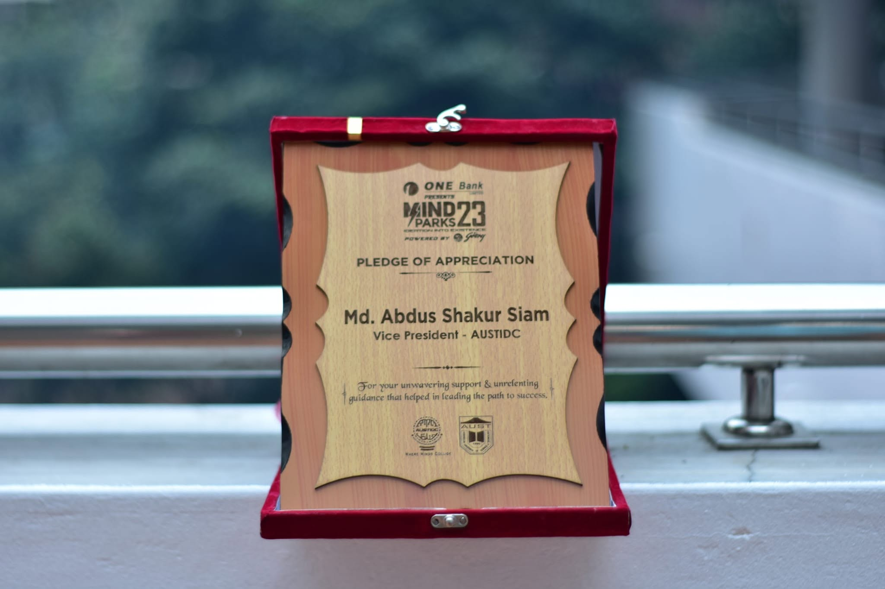
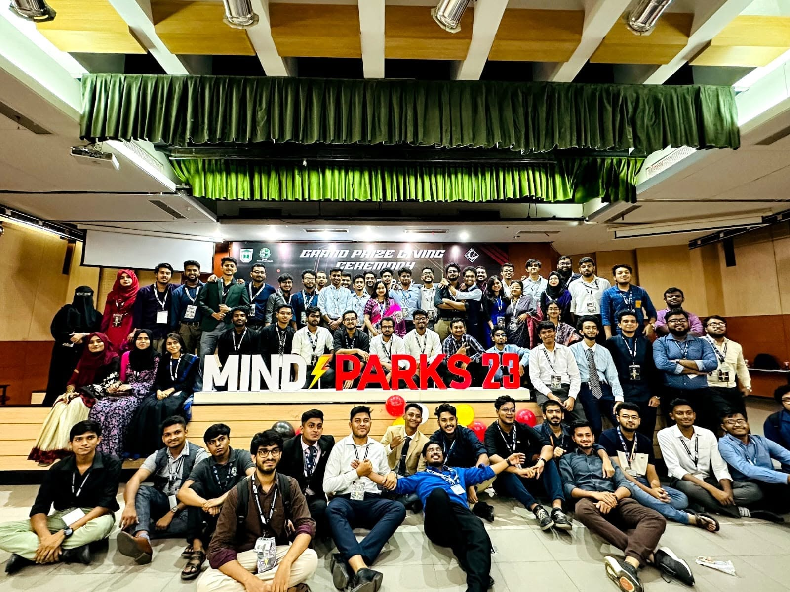
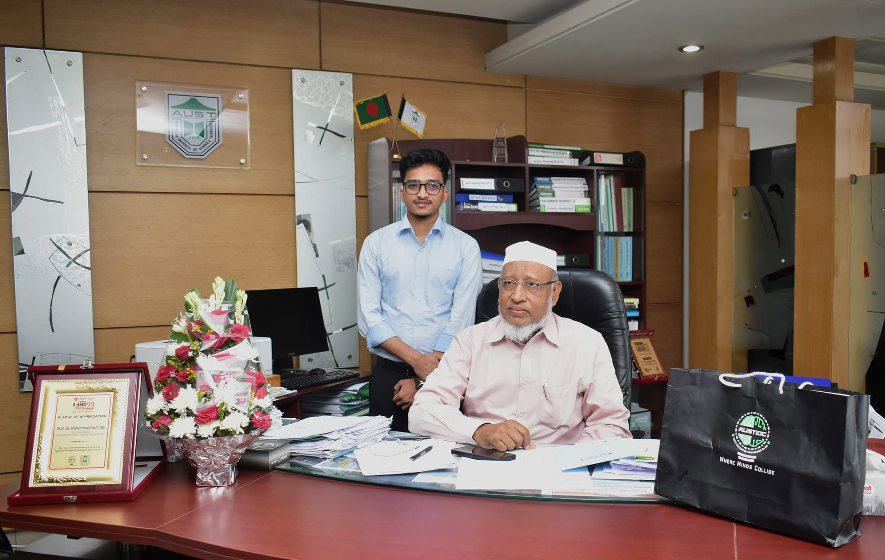
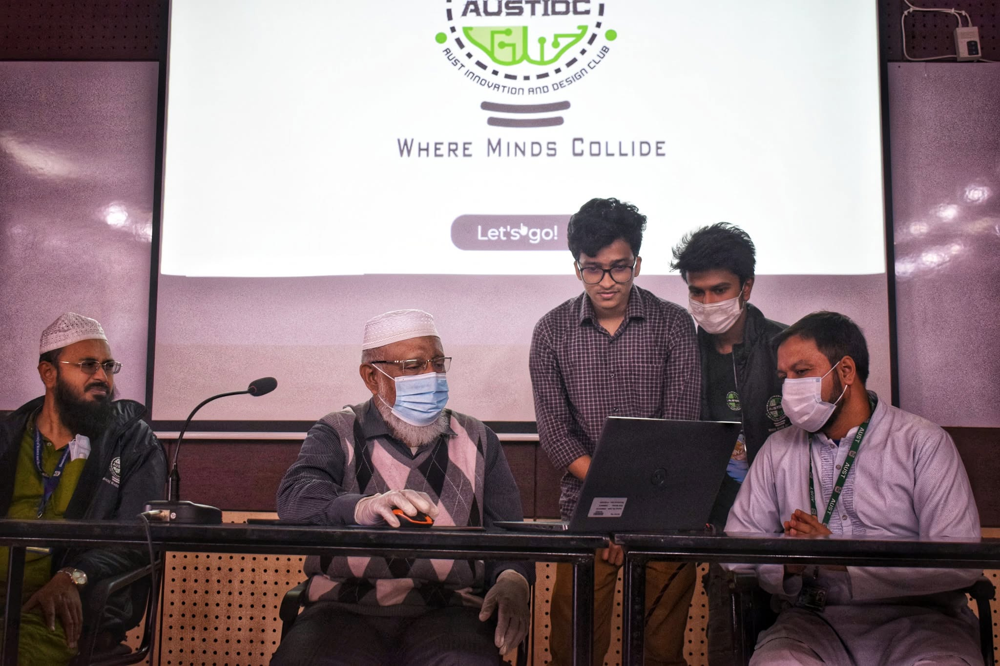
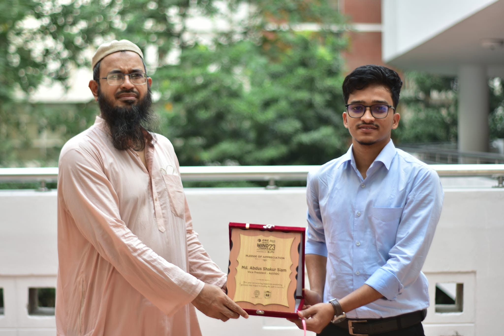

Vice President — AUST Innovation and Design Club (AUSTIDC)
2022 – 2023
Institution: Ahsanullah University of Science and Technology (AUST), Dhaka, Bangladesh
Progression: Web Developer & Technical Executive → Vice President (Executive Board)
Executive Summary: Directed organizational operations, technical strategy, and volunteer management for one of the university’s largest student engineering bodies. Managed an active cohort of 90+ student executives and volunteers.
Fundraising: BDT 1.2M+ (1200K)
Team Managed: 90+ Student Executives
Festival Footprint: 30+ Universities
Award: Pledge of Appreciation
Key Achievements & Responsibilities:
- Fundraising & Corporate Outreach: Spearheaded corporate sponsorship drives, securing over BDT 1.2M (1200K) in external funding from commercial partners (including ONE Bank and Godrej) for national-scale technical events.
- MindSparks ’23 (Flagship National Innovation Festival): Served as core organizer and technical director for MindSparks ’23, overseeing multi-track national competitions across robotics, VLSI, hackathons, and project showcases with participants from 30+ universities across Bangladesh.
- Executive Representation: Represented the student body before the university leadership, including the Vice-Chancellor (Prof. Dr. Muhammad Fazli Ilahi) and the Head of the EEE Department.
- Recognition: Awarded the “Pledge of Appreciation” by the Vice-Chancellor and Faculty Advisor for leadership, organizational excellence, and service to the student community.
Photo Documentation — AUSTIDC & MindSparks ’23




